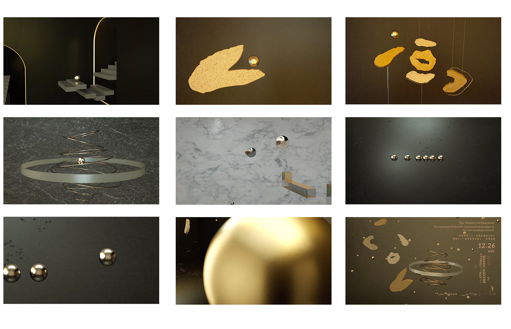

此動畫為教育部國家講座主持人暨學術獎「國士無雙」宣傳影片，國士無雙的活動是選出各領域學術傑出的研究者所舉辦的。而各學術領域研究者在研究時所經歷的問題也可能因為各種不確定性而改變研究成果，但是透過實驗、修改、驗證，經歷重重關卡最終才得到珍貴的結果。
這支動畫想要表達各領域的人從面對問題至最終結果的過程。將小金球比擬為研究者的核心，碰到問題並逐一解決，在通過各種試煉後，最後才得以看出通過的各種關卡，即為通往成功的過程，這些問題及困難會成為你通往成功的歷程。

導演 Director、動畫 Motion Design｜柯瑋婷 Dory Ko
Back